Ember Costumes
Tutorials and Resources
Zuko's Scar Tutorial
One of the best things about John's Zuko costume was the amazing burn scar--and not just the make up, but the scab-like texture of it.
All day long at Nebraskon people were asking to poke John's burned-looking eye.
Halloween and costume stores carry Theatrical Burn Scar make-up kits which work great! We always go to the Halloween superstores right after Halloween in Early November and stock up on make-up, wigs, and any other supplies we think might come in handy in the next year of costuming. That's where these make-up kits came from. They're relatively cheap and well worth the money. One kit will may even last multiple uses, depending on how big the scar is that you want to recreate.

Besides the kit, you'll need a cup of water and something to mix the goo with. Follow the instructions on whichever kit you chose to add the correct amount of water to the powder provided in the kit. If you're having trouble, keep in mind that less water will make a thicker substance and more water will make a thinner, more liquid substance.
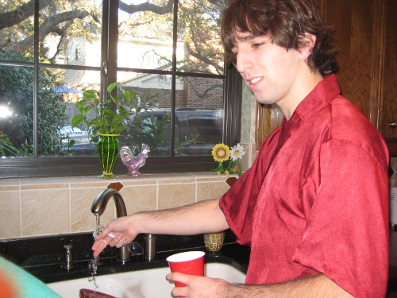
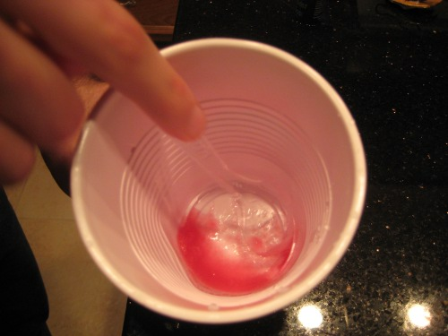
Next, use your fingers or a make-up sponge to apply the goo to your face. This should be done quickly because as the goo dries up, it loses it's stickiness and won't stay on your face.
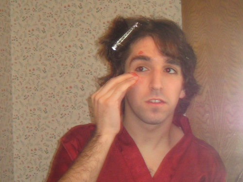
Check your reference images to be sure that you're putting the goo where it needs to go. (This is a mirror image, so the scar looks like it's on the wrong side!)
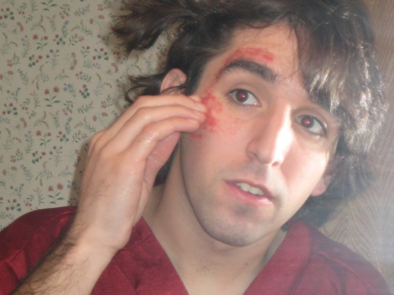
Also, don't put it directly on your eyelid. John learned the hard way that as it dries it kind of pulls at your skin, and it's really uncomfortable to not be able to close your eye all the way because it's all crusty and scar-like. Be careful not to poke your eye out or anything like that too.
Wait for the goo to set completely--it should feel hard and scab-like to the touch:
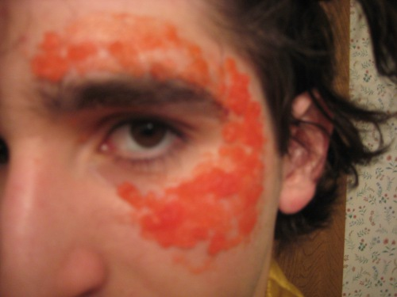
Then, using a make-up sponge, apply shades of red and brown from the Make-up kit, gently covering up the now-hardened pink goo and the skin around it.
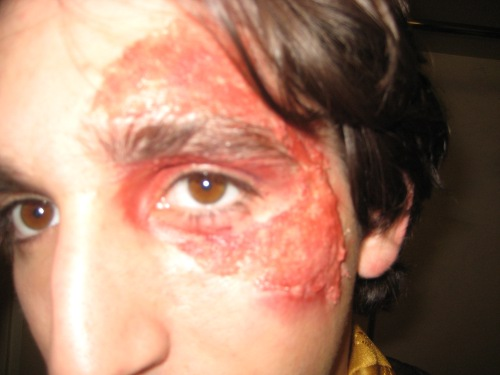
Close up at the end of the day--some of the make up wore off, but it still looked very realistic!
It took a bit of work to get off-picking at it like a really satisfying scab worked the best.
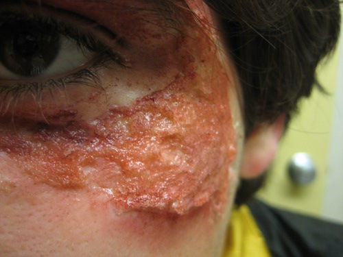
Back to Props and Boffers
Back to Zuko and Azula Costumes Page
Materials
Halloween and costume stores carry Theatrical Burn Scar make-up kits which work great! We always go to the Halloween superstores right after Halloween in Early November and stock up on make-up, wigs, and any other supplies we think might come in handy in the next year of costuming. That's where these make-up kits came from. They're relatively cheap and well worth the money. One kit will may even last multiple uses, depending on how big the scar is that you want to recreate.
Besides the kit, you'll need a cup of water and something to mix the goo with. Follow the instructions on whichever kit you chose to add the correct amount of water to the powder provided in the kit. If you're having trouble, keep in mind that less water will make a thicker substance and more water will make a thinner, more liquid substance.
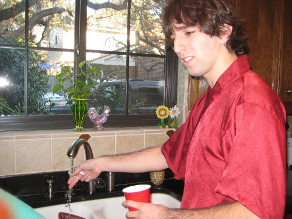
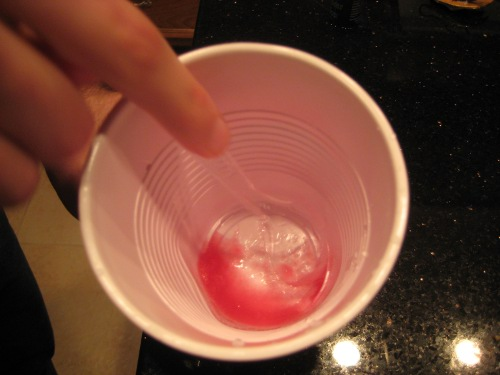
Apply Goo to face
Next, use your fingers or a make-up sponge to apply the goo to your face. This should be done quickly because as the goo dries up, it loses it's stickiness and won't stay on your face.
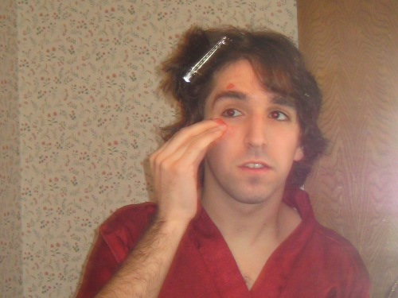
Check your reference images to be sure that you're putting the goo where it needs to go. (This is a mirror image, so the scar looks like it's on the wrong side!)
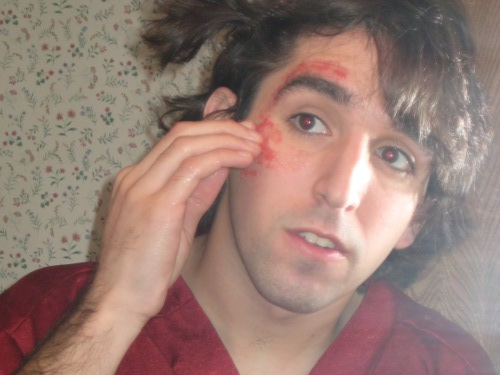
Also, don't put it directly on your eyelid. John learned the hard way that as it dries it kind of pulls at your skin, and it's really uncomfortable to not be able to close your eye all the way because it's all crusty and scar-like. Be careful not to poke your eye out or anything like that too.
Shade with Make-Up
Wait for the goo to set completely--it should feel hard and scab-like to the touch:
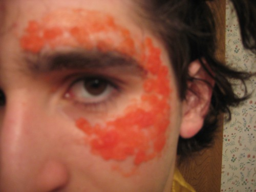
Then, using a make-up sponge, apply shades of red and brown from the Make-up kit, gently covering up the now-hardened pink goo and the skin around it.
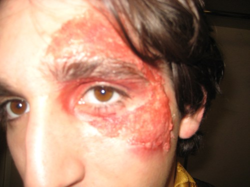
Close up at the end of the day--some of the make up wore off, but it still looked very realistic!
It took a bit of work to get off-picking at it like a really satisfying scab worked the best.
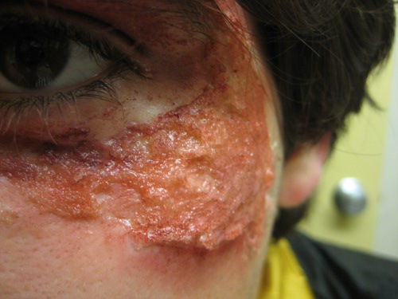
Back to Props and Boffers
Back to Zuko and Azula Costumes Page